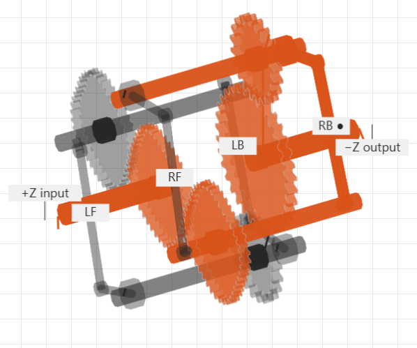
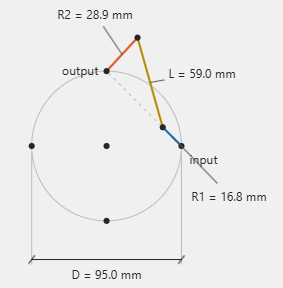
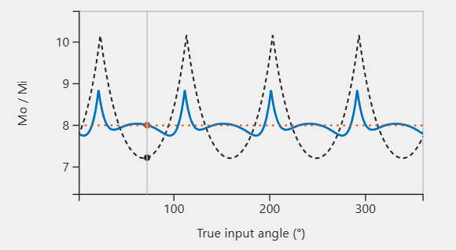
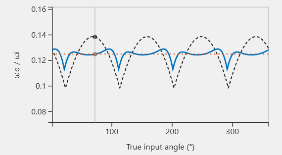
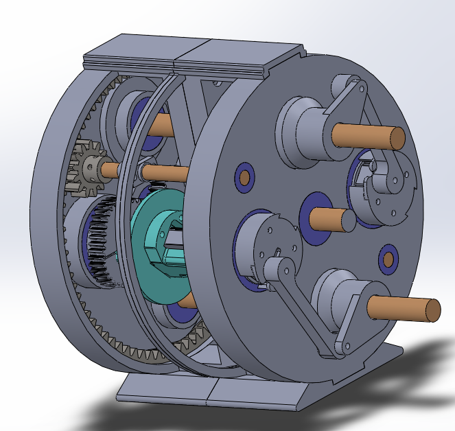

Mechanism Design & Computational Optimization
Beltless Gear CVT
Designed and prototyped a gear-based continuously variable transmission, using computational optimization to refine the mechanism.
OVERVIEW
Started as a side project to learn machine learning before applying it to my prosthetic-wrist research. Reverse-engineered RatioZero’s beltless CVT through mathematical modeling, geometry optimization, SolidWorks Motion gear-engagement checks, and physical prototyping.
Python Modeling And Optimization
Used a Python-based kinematic model to investigate how linkage dimensions and noncircular gear profiles affected motion, then explored surrogate-assisted optimization to reduce modeled torque ripple.




CAD And Motion Validation
Modeled and developed the CVT assembly in SolidWorks, imported the designed gear profiles, and used contact-driven motion to validate gear meshing.


Physical Concept Prototype
Manufactured and assembled a 3D-printed prototype demonstrating continuous ratio adjustment.